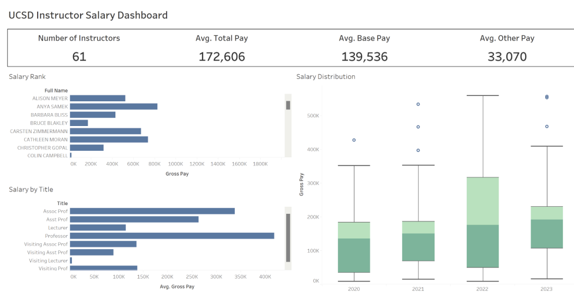

📊 UCSD Rady CAPES Dashboard & Salary Equity Analysis
This interactive data visualization project analyzes the relationship between teaching performance and instructor
salary at the UC San Diego Rady School of Management. The goal is to help administrators understand how course
outcomes, student feedback, and compensation align — or conflict.
🯠Project Objectives
- Compare instructor salary against CAPES-based teaching evaluations.
- Analyze performance by student GPA, study habits, and recommendation rates.
- Investigate gender-based salary gaps and systemic disparities.
- Provide actionable insights to improve fairness and academic quality.
📊 Dashboards Included
- Student Performance – Rankings by GPA and student recommendation rate.
- Instructor Salary – Salary distribution by title, year, and instructor.
- Salary vs Performance – Visualization of salary-GPA-rating alignment.
- Gender vs Pay – Salary/workload trends segmented by gender, title, and year.
- Individual vs Title Average – Compares instructor KPIs to their title average.
📷 Dashboard Snapshots
Salary vs Performance

Scatter plots and box plots explore the relationship between instructor salary and their student evaluation
outcomes (GPA, recommendation %).
Instructor Salary Distribution

Bar graphs and filters allow viewers to explore salary progression by year, title, and individual faculty.
🧠Key Findings
- 📈 Higher instructor salaries generally correlate with higher GPA and recommendation ratings.
- ⚖️ On average, female instructors earn $40,000 less than males under similar workloads and
titles.
- 📠Despite high salaries, some instructors consistently underperform — suggesting need for review or
intervention.
- 📉 Female salaries dropped more than male salaries post-2022, indicating a trend worth administrative
attention.
🧰 Data Sources & Engineering
- 📂 CAPES Evaluation Data – Public data scraped from Kaggle after the CAPES system shut down
in 2023.
- 🧪 Faculty Salary Data – Scraped using Selenium from the UC Wage Transparency Portal.
- 🔧 Data Cleaning – Used regex for name splits, date parsing, GPA extraction, and score
formatting.
🔗 Selenium Code Credit (COGS 108)
Web scraping automation adapted from:
- Lily Yu
- Sophia Alonso
- Kelly Tran
- Yining Wang
🧩 Dashboard Interactivity
- Drill-down Filters – Select instructor, title, or year across views.
- KPI Snapshots – Click data points to update sidebar summaries in real-time.
- Year-over-Year Analysis – Examine changes in pay and performance over time.
👨‍👩‍👧 Team Roles
- Chen-Fan Lee – Dashboard creation
- Ethan Lu – Final documentation & dashboard polishing
- Ryosuke Oguchi – Data collection, scraping & cleaning
- Nicole Ou – Data preparation & visualization
✅ Recommendations
- Conduct annual salary audits focused on gender, title, and teaching outcomes.
- Align salary reviews with performance metrics (e.g. recommendation %, GPA).
- Provide mentorship or reconsider staffing for persistently low-rated instructors.
- Encourage transparency in evaluation criteria and salary structure.
📬 Contact
Website: Github